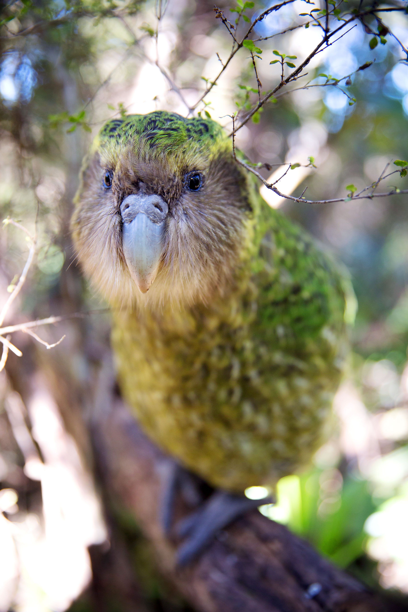
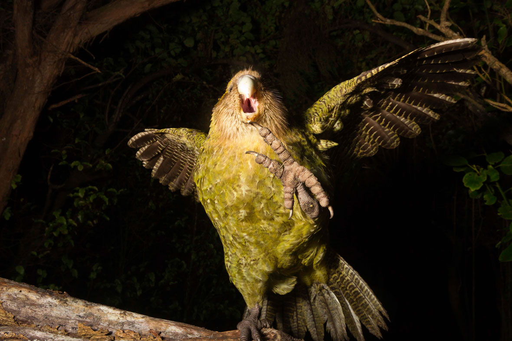
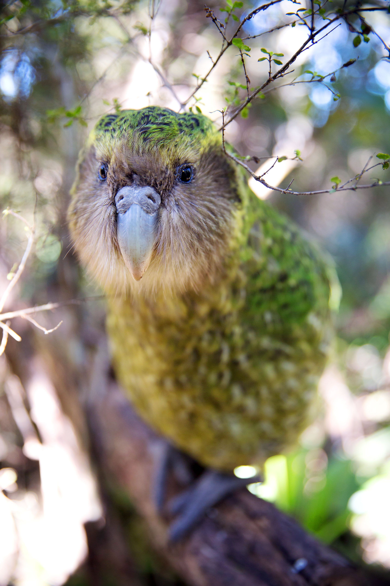
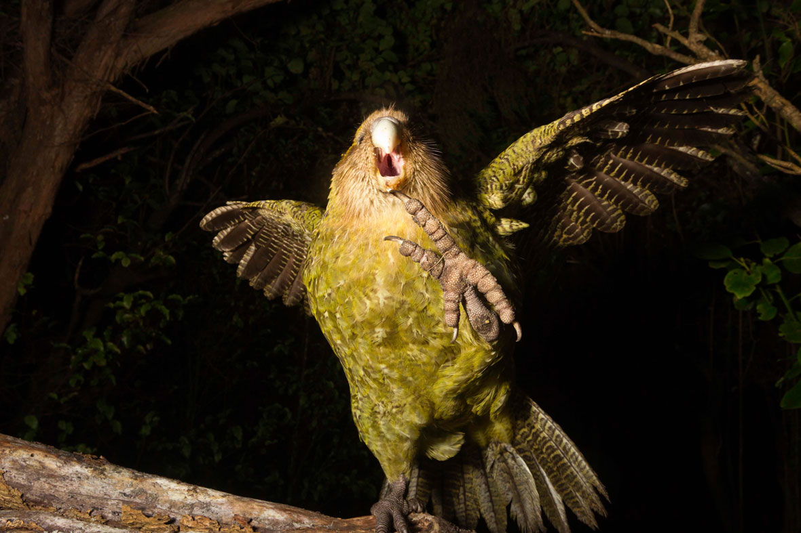

KAKAPO
A flightless parrot that's critically endangered.
HABITAT
New Zealand. They used to be common, and then - due to humans and mammals - their population was decimated to the point that only approximately 150 species live today. They currently live only on four islands off of the coast of New Zealand, with two more planned to be added in the future once they're confirmed predator-free.
{kind=link}
In terms of hardiness, however, they can apparently live in scrub forest, temperate forest, the coast, and more. The main problem is, again, that they can't handle mammals and predators exist on most of the islands.
WHAT IS A KAKAPO LIKE?
They're big, fat, flightless green parrots. They're yellow-green in terms of plumage. They're apparently quite friendly and smell very nice. The Maori used to hunt them, wear their plumage, but also keep them as pets. I've read in a few places that they were compared to dogs in terms of temperment. The oldest recorded kakapo lived to be 125.
When mating, they sound like this, which is a ridiculious call.
WHERE TO LEARN MORE ABOUT THESE FAT PARROTS?
WHY DO YOU HAVE A PAGE ON THEM?
First, because I like them, second because I'm working on my portfolio page and I'm trying to consolidate links to make things nice and tidy. Making a webpage seemed easier than tracking down some of the other work I did.